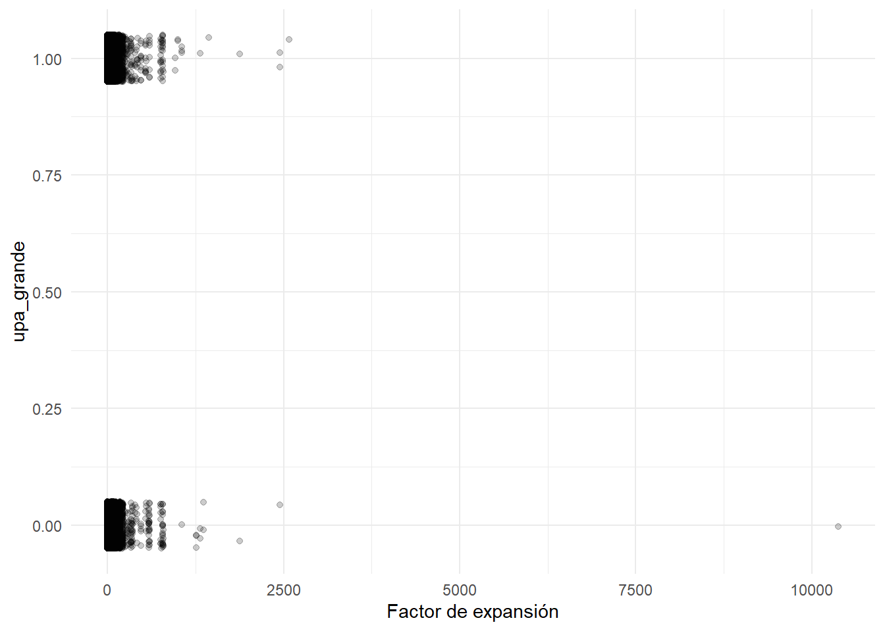
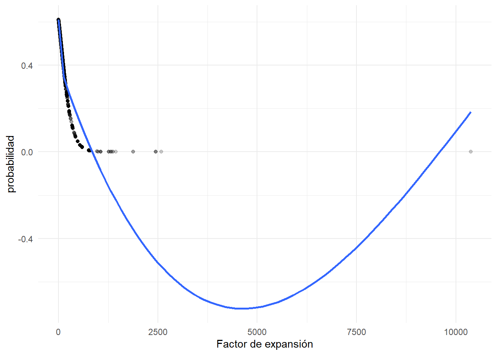
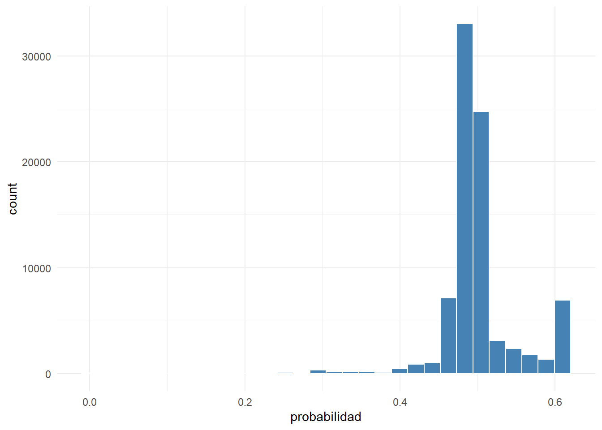
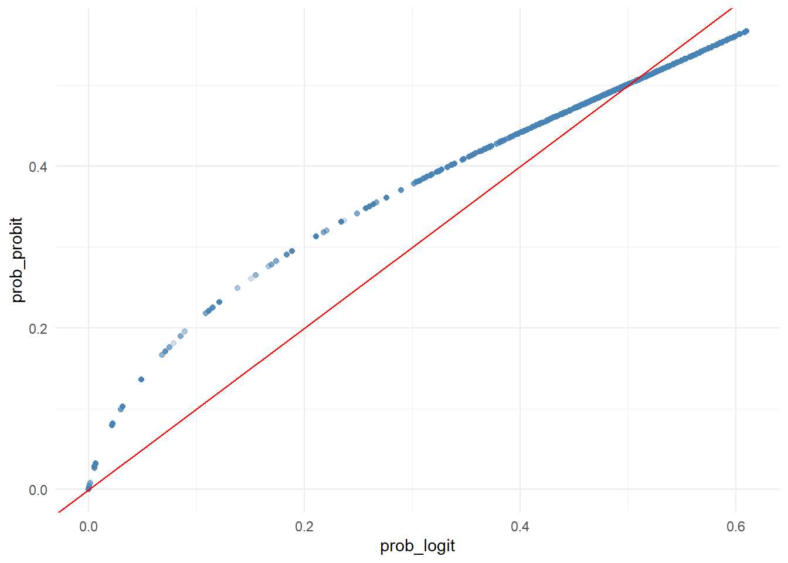

library(tidyverse)
library(ggplot2)
library(broom)
library(knitr)
library(here)27 Modelos Logit y Probit
Objetivos de aprendizaje
Al finalizar esta sección, el lector será capaz de:
- Comprender cuándo utilizar modelos Logit.
- Diferenciar regresión lineal y regresión logística.
- Construir variables binarias.
- Estimar modelos Logit en R.
- Interpretar probabilidades estimadas.
- Generar predicciones binarias.
27.1 Introducción
Los modelos lineales estudiados en capítulos anteriores son apropiados cuando la variable dependiente es continua.
Por ejemplo:
Ingreso
Producción
Superficie
VentasSin embargo, muchas preguntas de investigación involucran resultados binarios.
Algunos ejemplos son:
Compra / No compra
Aprueba / No aprueba
Empleada / Desempleada
Grande / No grandeCuando la variable respuesta solo puede tomar dos valores, la regresión lineal deja de ser apropiada y es necesario utilizar modelos de respuesta binaria (Hosmer et al., 2013).
27.2 Cargando librerías
27.3 Cargando la base analítica
base_analitica <- readRDS(
here(
"datos",
"procesado",
"ESPAC_2025",
"sunac_transformado.rds"
)
)27.4 Construcción de la variable binaria
Para fines pedagógicos construiremos una variable que identifique UPA con superficie superior a la mediana.
mediana_superficie <- median(
base_analitica$supertotal,
na.rm = TRUE
)
base_logit <- base_analitica |>
mutate(
upa_grande =
if_else(
supertotal >
mediana_superficie,
1,
0
)
) |>
select(
upa_grande,
fact_exp_fin,
supertotal
) |>
drop_na()27.5 Verificación de la variable respuesta
base_logit |>
count(
upa_grande
) |>
kable(
caption = "Distribución de la variable binaria"
)| upa_grande | n |
|---|---|
| 0 | 42270 |
| 1 | 42268 |
Interpretación
La variable respuesta toma únicamente dos valores:
1 = UPA grande
0 = UPA no grande27.6 ¿Por qué no usar regresión lineal?
Supongamos el siguiente modelo:
Y = β0 + β1XCuando Y solo puede ser 0 o 1, la regresión lineal puede producir predicciones imposibles:
-0.25
1.34
1.72Estas cantidades no representan probabilidades válidas.
27.7 El modelo Logit
La regresión logística resuelve este problema modelando probabilidades dentro del intervalo:
0 ≤ P(Y=1) ≤ 1mediante una función logística (Hosmer et al., 2013).
La forma general es:
\[P(Y_i = 1) = \frac{1}{1 + e^{-(\beta_0 + \beta_1 X_i)}}\]
27.8 Exploración inicial
ggplot(
base_logit,
aes(
x = fact_exp_fin,
y = upa_grande
)
) +
geom_jitter(
height = 0.05,
alpha = 0.20
) +
theme_minimal()
Interpretación
La dispersión muestra observaciones concentradas en dos valores posibles: 0 y 1.
27.9 Estimación del modelo Logit
modelo_logit <- glm(
upa_grande ~
fact_exp_fin,
data = base_logit,
family = binomial(
link = "logit"
)
)27.10 Resumen del modelo
tidy(
modelo_logit
) |>
kable(
digits = 4,
caption = "Coeficientes del modelo Logit"
)| term | estimate | std.error | statistic | p.value |
|---|---|---|---|---|
| (Intercept) | 0.4467 | 0.0173 | 25.8582 | 0 |
| fact_exp_fin | -0.0071 | 0.0003 | -27.9712 | 0 |
Interpretación
Los coeficientes indican la dirección del efecto sobre la probabilidad de pertenecer a la categoría 1.
El signo positivo implica aumento de probabilidad.
El signo negativo implica disminución de probabilidad.
27.11 Probabilidades estimadas
base_logit <- base_logit |>
mutate(
probabilidad =
predict(
modelo_logit,
type = "response"
)
)27.12 Resumen de probabilidades
tibble(
Estadistico = c(
"Minimo",
"Media",
"Maximo"
),
Valor = c(
min(
base_logit$probabilidad
),
mean(
base_logit$probabilidad
),
max(
base_logit$probabilidad
)
)
) |>
kable(
digits = 4,
caption = "Resumen de probabilidades estimadas"
)| Estadistico | Valor |
|---|---|
| Minimo | 0.0000 |
| Media | 0.5000 |
| Maximo | 0.6098 |
Interpretación
Todas las predicciones permanecen dentro del rango válido de probabilidades.
27.13 Curva logística
ggplot(
base_logit,
aes(
x = fact_exp_fin,
y = probabilidad
)
) +
geom_point(
alpha = 0.20
) +
geom_smooth(
se = FALSE
) +
theme_minimal()
Interpretación
La relación entre la variable explicativa y la probabilidad presenta una forma no lineal característica de los modelos logísticos.
27.14 Conclusión práctica
En esta primera parte aprendimos a:
- Identificar situaciones con variables binarias.
- Comprender las limitaciones de la regresión lineal.
- Construir variables dicotómicas.
- Estimar modelos Logit.
- Obtener probabilidades válidas.
- Interpretar coeficientes logísticos.
27.15 Introducción
En la sección anterior aprendimos a estimar modelos Logit y obtener probabilidades.
Sin embargo, los coeficientes de una regresión logística no se interpretan directamente como cambios en probabilidades.
Para interpretar adecuadamente los resultados es necesario comprender tres conceptos:
- Probabilidad.
- Odds.
- Odds Ratio.
Estos conceptos constituyen la base de la interpretación de modelos Logit (Hosmer et al., 2013).
27.16 Cargando librerías
library(tidyverse)
library(ggplot2)
library(broom)
library(knitr)
library(here)27.17 Cargando la base analítica
base_analitica <- readRDS(
here(
"datos",
"procesado",
"ESPAC_2025",
"sunac_transformado.rds"
)
)27.18 Reconstrucción de la variable binaria
mediana_superficie <- median(
base_analitica$supertotal,
na.rm = TRUE
)
base_logit <- base_analitica |>
mutate(
upa_grande =
if_else(
supertotal >
mediana_superficie,
1,
0
)
) |>
select(
upa_grande,
fact_exp_fin
) |>
drop_na()27.19 Reestimación del modelo
modelo_logit <- glm(
upa_grande ~
fact_exp_fin,
family = binomial(
link = "logit"
),
data = base_logit
)27.20 Probabilidad
La probabilidad representa la posibilidad de ocurrencia de un evento.
Por ejemplo:
P(UPA grande) = 0.70significa:
70%de probabilidad de pertenecer a la categoría:
UPA grande27.21 Odds
Los odds representan la razón entre la probabilidad de ocurrencia y la probabilidad de no ocurrencia.
\[\text{Odds} = \frac{P(Y=1)}{1 - P(Y=1)}\]
Por ejemplo:
P = 0.75produce:
Odds = 3lo que significa que el evento es tres veces más probable que su alternativa.
27.22 Conversión de probabilidades a odds
tibble(
Probabilidad = c(
0.20,
0.50,
0.80
)
) |>
mutate(
Odds =
Probabilidad /
(1 - Probabilidad)
) |>
kable(
digits = 3,
caption = "Conversión de probabilidades a odds"
)| Probabilidad | Odds |
|---|---|
| 0.2 | 0.25 |
| 0.5 | 1.00 |
| 0.8 | 4.00 |
Interpretación
Los odds aumentan rápidamente cuando la probabilidad se aproxima a uno.
27.23 El logit
El modelo Logit realmente estima:
\[\text{logit}(P) = \log\left(\frac{P(Y=1)}{1 - P(Y=1)}\right) = \beta_0 + \beta_1 X_i\]
Esta transformación permite modelar probabilidades mediante una combinación lineal de variables explicativas.
27.24 Coeficientes estimados
tidy(
modelo_logit
) |>
kable(
digits = 4,
caption = "Coeficientes estimados"
)| term | estimate | std.error | statistic | p.value |
|---|---|---|---|---|
| (Intercept) | 0.4467 | 0.0173 | 25.8582 | 0 |
| fact_exp_fin | -0.0071 | 0.0003 | -27.9712 | 0 |
Interpretación
Los coeficientes representan cambios en el logaritmo de los odds.
Esta interpretación suele resultar poco intuitiva para usuarios no especializados.
27.25 Odds Ratio
Por esta razón normalmente transformamos los coeficientes exponenciándolos.
tidy(
modelo_logit
) |>
mutate(
Odds_Ratio =
exp(
estimate
)
) |>
select(
term,
estimate,
Odds_Ratio
) |>
kable(
digits = 4,
caption = "Odds Ratio"
)| term | estimate | Odds_Ratio |
|---|---|---|
| (Intercept) | 0.4467 | 1.5631 |
| fact_exp_fin | -0.0071 | 0.9929 |
Interpretación
Los Odds Ratio permiten una interpretación mucho más sencilla.
27.26 Interpretación del Odds Ratio
Si:
Odds Ratio = 1no existe efecto.
Si:
Odds Ratio > 1la probabilidad aumenta.
Si:
Odds Ratio < 1la probabilidad disminuye.
27.27 Ejemplos prácticos
tibble(
Odds_Ratio = c(
0.70,
1.00,
1.30,
2.50
),
Interpretacion = c(
"Disminuye la probabilidad",
"Sin efecto",
"Incremento moderado",
"Incremento importante"
)
) |>
kable(
caption = "Interpretación general de Odds Ratio"
)| Odds_Ratio | Interpretacion |
|---|---|
| 0.7 | Disminuye la probabilidad |
| 1.0 | Sin efecto |
| 1.3 | Incremento moderado |
| 2.5 | Incremento importante |
27.28 Probabilidades predichas
base_logit <- base_logit |>
mutate(
probabilidad =
predict(
modelo_logit,
type = "response"
)
)27.29 Distribución de probabilidades
ggplot(
base_logit,
aes(
x = probabilidad
)
) +
geom_histogram(
bins = 30,
fill = "steelblue",
color = "white"
) +
theme_minimal()
Interpretación
El gráfico muestra cómo el modelo distribuye las probabilidades predichas entre las observaciones.
27.30 Clasificación binaria
Una práctica común consiste en transformar probabilidades en decisiones binarias.
Por ejemplo:
Probabilidad ≥ 0.50
→ Clase 1
Probabilidad < 0.50
→ Clase 027.31 Construcción de clases predichas
base_logit <- base_logit |>
mutate(
clase_predicha =
if_else(
probabilidad >= 0.50,
1,
0
)
)27.32 Matriz de clasificación
table(
Observado =
base_logit$upa_grande,
Predicho =
base_logit$clase_predicha
) |>
kable(
caption = "Matriz de clasificación"
)| 0 | 1 | |
|---|---|---|
| 0 | 37552 | 4718 |
| 1 | 30404 | 11864 |
Interpretación
La tabla resume los aciertos y errores del modelo.
27.33 Exactitud de clasificación
exactitud <- mean(
base_logit$upa_grande ==
base_logit$clase_predicha
)
tibble(
Exactitud = exactitud
) |>
kable(
digits = 4,
caption = "Exactitud de clasificación"
)| Exactitud |
|---|
| 0.5845 |
Interpretación
La exactitud representa la proporción de observaciones correctamente clasificadas.
27.34 Predicciones para nuevos casos
nuevos_casos <- tibble(
fact_exp_fin = c(
quantile(
base_logit$fact_exp_fin,
0.25
),
median(
base_logit$fact_exp_fin
),
quantile(
base_logit$fact_exp_fin,
0.75
)
)
)
nuevos_casos |>
mutate(
probabilidad =
predict(
modelo_logit,
newdata = nuevos_casos,
type = "response"
)
) |>
kable(
digits = 4,
caption = "Predicciones para nuevos escenarios"
)| fact_exp_fin | probabilidad |
|---|---|
| 64.9217 | 0.4957 |
| 65.8016 | 0.4942 |
| 67.6965 | 0.4908 |
Interpretación
Las probabilidades permiten evaluar escenarios futuros bajo diferentes niveles de experiencia financiera.
27.35 Conclusión práctica
En esta sección aprendimos a:
- Interpretar odds.
- Interpretar odds ratio.
- Transformar coeficientes logísticos.
- Obtener probabilidades predichas.
- Construir reglas de clasificación.
- Evaluar exactitud de clasificación.
- Generar predicciones para nuevos casos.
En la siguiente sección estudiaremos el modelo Probit y compararemos sus resultados con el modelo Logit.
27.36 Introducción
El modelo Logit no es el único modelo disponible para analizar variables binarias.
Otra alternativa ampliamente utilizada es el modelo Probit.
Ambos modelos persiguen el mismo objetivo:
Estimar probabilidades de ocurrencia
de un evento binario.La principal diferencia radica en la función matemática utilizada para transformar probabilidades (Hosmer et al., 2013; Wooldridge, 2019).
En la práctica, Logit y Probit suelen producir resultados muy similares.
27.37 Cargando librerías
library(tidyverse)
library(ggplot2)
library(broom)
library(knitr)
library(here)27.38 Cargando la base analítica
base_analitica <- readRDS(
here(
"datos",
"procesado",
"ESPAC_2025",
"sunac_transformado.rds"
)
)27.39 Construcción de la variable binaria
mediana_superficie <- median(
base_analitica$supertotal,
na.rm = TRUE
)
base_binaria <- base_analitica |>
mutate(
upa_grande =
if_else(
supertotal >
mediana_superficie,
1,
0
)
) |>
select(
upa_grande,
fact_exp_fin
) |>
drop_na()27.40 Reestimación del modelo Logit
modelo_logit <- glm(
upa_grande ~
fact_exp_fin,
data = base_binaria,
family = binomial(
link = "logit"
)
)27.41 Estimación del modelo Probit
modelo_probit <- glm(
upa_grande ~
fact_exp_fin,
data = base_binaria,
family = binomial(
link = "probit"
)
)27.42 ¿Qué es el modelo Probit?
El modelo Probit utiliza la función de distribución acumulada de una distribución normal estándar.
Conceptualmente:
Logit
→ Distribución logística
Probit
→ Distribución normalAmbos garantizan probabilidades válidas entre 0 y 1.
27.43 Resumen del modelo Probit
tidy(
modelo_probit
) |>
kable(
digits = 4,
caption = "Coeficientes estimados del modelo Probit"
)| term | estimate | std.error | statistic | p.value |
|---|---|---|---|---|
| (Intercept) | 0.1681 | 0.0097 | 17.3885 | 0 |
| fact_exp_fin | -0.0027 | 0.0001 | -19.1401 | 0 |
Interpretación
Los signos de los coeficientes se interpretan de manera similar a los del modelo Logit.
27.44 Comparación de coeficientes
coef_logit <- tidy(
modelo_logit
) |>
select(
term,
estimate
) |>
rename(
Logit = estimate
)
coef_probit <- tidy(
modelo_probit
) |>
select(
term,
estimate
) |>
rename(
Probit = estimate
)
left_join(
coef_logit,
coef_probit,
by = "term"
) |>
kable(
digits = 4,
caption = "Comparación de coeficientes"
)| term | Logit | Probit |
|---|---|---|
| (Intercept) | 0.4467 | 0.1681 |
| fact_exp_fin | -0.0071 | -0.0027 |
Interpretación
Las magnitudes suelen diferir porque cada modelo utiliza una escala distinta.
Lo importante es que normalmente mantienen el mismo signo y dirección del efecto.
27.45 Probabilidades estimadas
base_binaria <- base_binaria |>
mutate(
prob_logit =
predict(
modelo_logit,
type = "response"
),
prob_probit =
predict(
modelo_probit,
type = "response"
)
)27.46 Comparación de probabilidades
tibble(
Modelo = c(
"Logit",
"Probit"
),
Probabilidad_Media = c(
mean(
base_binaria$prob_logit
),
mean(
base_binaria$prob_probit
)
)
) |>
kable(
digits = 4,
caption = "Promedio de probabilidades estimadas"
)| Modelo | Probabilidad_Media |
|---|---|
| Logit | 0.5000 |
| Probit | 0.5005 |
Interpretación
Las diferencias suelen ser pequeñas en aplicaciones reales.
27.47 Comparación gráfica
ggplot(
base_binaria,
aes(
x = prob_logit,
y = prob_probit
)
) +
geom_point(
alpha = 0.25,
color = "steelblue"
) +
geom_abline(
slope = 1,
intercept = 0,
color = "red"
) +
theme_minimal()
Interpretación
Mientras más próximos se encuentren los puntos a la diagonal, más similares serán las predicciones.
27.48 Exactitud de clasificación
exactitud_logit <- mean(
if_else(
base_binaria$prob_logit >= 0.50,
1,
0
) ==
base_binaria$upa_grande
)
exactitud_probit <- mean(
if_else(
base_binaria$prob_probit >= 0.50,
1,
0
) ==
base_binaria$upa_grande
)
tibble(
Modelo = c(
"Logit",
"Probit"
),
Exactitud = c(
exactitud_logit,
exactitud_probit
)
) |>
kable(
digits = 4,
caption = "Comparación de exactitud"
)| Modelo | Exactitud |
|---|---|
| Logit | 0.5845 |
| Probit | 0.5852 |
Interpretación
En la mayoría de aplicaciones ambos modelos presentan desempeños muy parecidos.
27.49 ¿Cuándo usar Logit?
El modelo Logit suele preferirse cuando:
- Se desean interpretar Odds Ratio.
- Se trabaja en epidemiología.
- Se realizan análisis de riesgo.
- Se requiere comunicación sencilla de resultados.
27.50 ¿Cuándo usar Probit?
El modelo Probit suele utilizarse cuando:
- Se trabaja en econometría.
- Se utilizan modelos de elección discreta.
- Se desea mantener consistencia con literatura previa.
27.51 Comparación resumida
tibble(
Caracteristica = c(
"Variable dependiente",
"Probabilidades válidas",
"Interpretación Odds Ratio",
"Uso frecuente"
),
Logit = c(
"Binaria",
"Sí",
"Sí",
"Epidemiología y ciencias sociales"
),
Probit = c(
"Binaria",
"Sí",
"No",
"Econometría"
)
) |>
kable(
caption = "Comparación general entre Logit y Probit"
)| Caracteristica | Logit | Probit |
|---|---|---|
| Variable dependiente | Binaria | Binaria |
| Probabilidades válidas | Sí | Sí |
| Interpretación Odds Ratio | Sí | No |
| Uso frecuente | Epidemiología y ciencias sociales | Econometría |
Interpretación
Ambos modelos constituyen alternativas válidas para variables binarias.
27.52 Flujo de trabajo recomendado
tibble(
Paso = 1:6,
Actividad = c(
"Definir variable binaria",
"Explorar frecuencias",
"Estimar Logit",
"Interpretar probabilidades",
"Evaluar clasificación",
"Comparar con Probit"
)
) |>
kable(
caption = "Flujo recomendado de análisis"
)| Paso | Actividad |
|---|---|
| 1 | Definir variable binaria |
| 2 | Explorar frecuencias |
| 3 | Estimar Logit |
| 4 | Interpretar probabilidades |
| 5 | Evaluar clasificación |
| 6 | Comparar con Probit |
27.53 Manos a la obra
- Construya una variable binaria.
- Explore su distribución.
- Estime un modelo Logit.
- Obtenga probabilidades predichas.
- Calcule Odds Ratio.
- Construya una regla de clasificación.
- Evalúe exactitud.
- Estime un modelo Probit.
- Compare predicciones.
- Redacte conclusiones sustantivas.
27.54 Resumen del capítulo
En este capítulo aprendimos a modelar variables binarias mediante regresiones Logit y Probit.
Primero identificamos las limitaciones de la regresión lineal cuando la variable dependiente solo puede tomar dos valores. Posteriormente estimamos modelos Logit, interpretamos probabilidades, Odds y Odds Ratio. Finalmente estimamos modelos Probit y comprobamos que ambos enfoques suelen generar resultados muy similares.
Los modelos Logit y Probit constituyen la base de numerosos métodos modernos de clasificación, análisis de riesgo, elección discreta y evaluación de decisiones, por lo que representan una extensión natural de los modelos lineales estudiados anteriormente. En la siguiente sección profundizaremos en odds, odds ratio e interpretación sustantiva de los coeficientes.